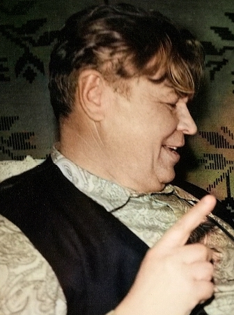
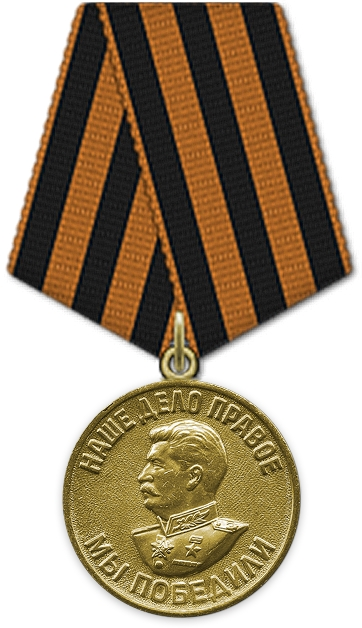
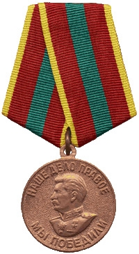
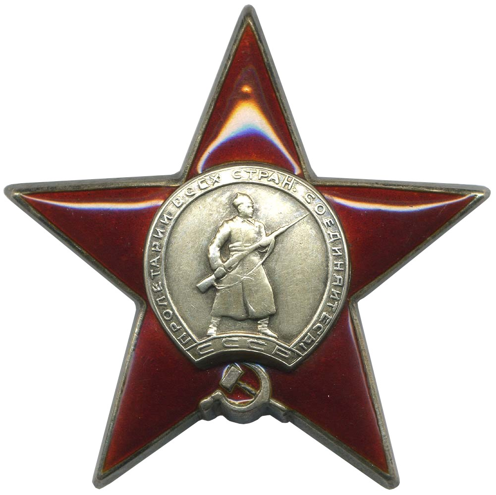
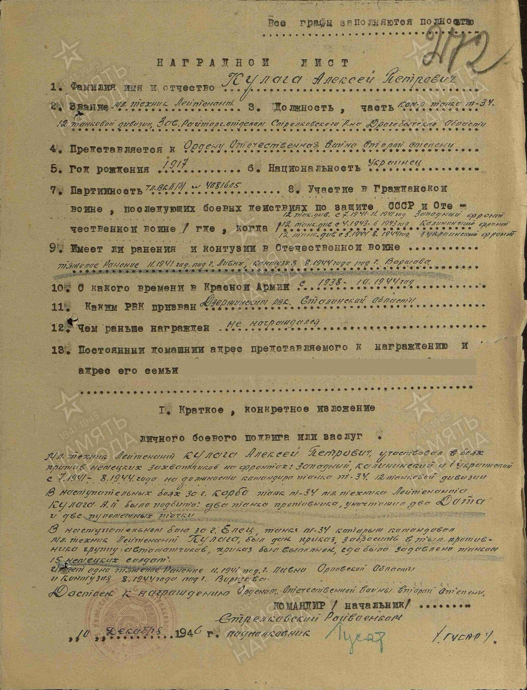
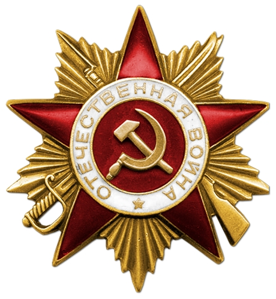

Родился: 18.03.1917, п.г.т.Щербиновка
Умер: ?
Место жительства: п.г.т.Щербиновка
Воинские звания: мл. лейтенант; гв. мл. техник-лейтенант; мл. техник-лейтенант
Призван в 1938 году Дзержинским РВК, Украинской ССР, Сталинской обл., Дзержинского р-на.
Воинские части:
150 отп ЗапФ;
опрос БТ и МВ КА;
341 гвардейский тяжелый самоходно-артиллерийский полк;
12 танковая дивизия;
Награды:
Медаль «За победу над Германией в Великой Отечественной войне 1941–1945 гг.»;
Орден Красной Звезды;
Орден Отечественной войны I степени;
Медаль «За доблестный труд в Великой Отечественной войне 1941–1945 гг.».
Ссылки на источники:
[1]. https://pamyat-naroda.ru/heroes/kld-card_uchet_officer9411313/.
Отец: Кулага Пётр
Брат: Кулага Федор Петрович
Бывшая жена: Кулага Александра Александровна
Жена: Кулага Мария Григорьевна
Сын: Кулага Владимир Алексеевич
Сын: Кулага Вячеслав Алексеевич
Кулага А.П. Медаль «За победу над Германией в Великой Отечественной войне 1941–1945 гг.» (Медаль): 09.05.1945. Воинское звание: мл. техник-лейтенант Кто наградил: Президиум ВС СССР Наименование награды: Медаль «За победу над Германией в Великой Отечественной войне 1941–1945 гг.» Дата документа: 09.05.1945. Медаль «За доблестный труд в Великой Отечественной войне 1941–1945 гг.» (Медаль): 06.06.1945. Воинское звание: мл. техник-лейтенант Кто наградил: Президиум ВС СССР Наименование награды: Медаль «За доблестный труд в Великой Отечественной войне 1941–1945 гг.» Дата документа: 06.06.1945. Орден Красной Звезды: 06.11.1947. Место призыва: Дзержинский РВК, Украинская ССР, Сталинская обл., Дзержинский р-н Дата поступления на службу: __.__.1938 Воинское звание: мл. техник-лейтенант Воинская часть: 12 тд Даты подвига: 01.11.1941-30.11.1941, 01.08.1944-31.08.1944 Наименование награды: Орден Красной Звезды Приказ подразделения №: 223/120 от: 06.11.1947 Издан: Президиум ВС СССР Информация об архиве - Архив: ЦАМО Фонд ист. информации: 33 Опись ист. информации: 744808 Дело ист. информации: 457; 86. Наградной лист Орденом Красной звезды (Документ): 06.11.1947. |
Орден Отечественной войны I степени (Орден): 06.04.1985. Место рождения: Украинская ССР, Донецкая обл., Дзержинский р-н, п. Щербиновка Номер документа: 79 Дата документа: 06.04.1985 Автор документа: Министр обороны СССР. |
Источники:
1. ПАМЯТЬ НАРОДА 1941-1945. Тип: Веб-сайт. Ссылка (URL): https://pamyat-naroda.ru.